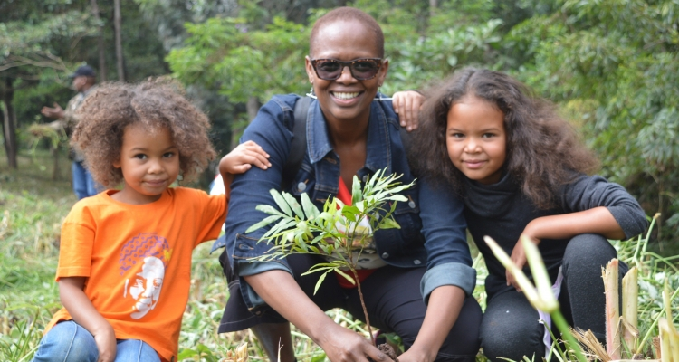

At Ashesi University, 55% of students receive scholarships, ensuring access to education even for those facing economic hardships. Patrick has prioritized expanding opportunities for women, raising the proportion of female students from 25% at the university's inception to 50% today, fostering inclusivity and gender equality in education.
hero section

THE 6TH PRIZE AWARD

slogan section
Actions for peace lay the foundation for sustainable peace.
Meet four innovators of peace who have driven tangible change
through action, solidarity, sustainability, and inspiration.
INNOVATION
FOR
PEACE
patrick awuah jr.
2025 Sunhak Peace Prize Laureate
Patrick Awuah Jr.
SUNHAK PEACE
PRIZE AWARD

A Visionary Educator Opening Africa’s Future
Patrick Awuah is an educator who has significantly contributed to the social and economic development of Ghana and Africa by founding Ashesi University. His efforts to transform the educational landscape and nurture future leaders have made Ashesi a highly respected institution across the continent.
( Achievements )


Opening Doors to Education: Advancing Access and Gender
Equality

Cultivating Cutting-Edge IT Talent to Lead Africa’s Future
Patrick Awuah has revolutionized the paradigm of African education by introducing STEM-focused, hands-on learning methodologies. The university he founded, Ashesi University, has become a hub for producing globally competitive talent, laying the groundwork for Africa's innovation-driven future.

Cultivating Cutting-Edge IT Talent to Lead Africa’s Future
Patrick Awuah has revolutionized the paradigm of African education by introducing STEM-focused, hands-on learning methodologies. The university he founded, Ashesi University, has become a hub for producing globally competitive talent, laying the groundwork for Africa's innovation-driven future.
( Achievements )

Pioneering Ethical Leadership to Overcome Corruption
Ashesi University is the first in Africa to implement an Honor Code, establishing an autonomous examination system along with a mechanism for monitoring and reporting misconduct. This initiative has promoted a culture of integrity, empowering students to grow into responsible leaders dedicated to driving progress within their communities and nations.
When you change leaders, you change a continent. The next century will be Africa’s century.
wanjira mathai
2025 Sunhak Peace Prize Laureate
Wanjira Mathai
SUNHAK PEACE
PRIZE AWARD

A Leader in African Ecosystem Restoration
Wanjira Mathai has been at the forefront of restoring Africa’s ecosystems and strengthening climate resilience through innovative and sustainable solutions. Her dedication to environmental protection has raised global awareness and enabled harmonious development between the environment and local communities.
( Achievements )
Planting 51 Million Trees Across Africa
Leading the Green Belt Movement, founded by her mother Wangari Maathai in 1977, Wanjira has played a pivotal role in restoring ecosystems and enhancing climate resilience across Africa.
- 
-

-

Empowering Women Entrepreneurs in Renewable Energy
Through the ‘Women Entrepreneurs in Renewables (wPOWER)’ program, she has provided renewable energy entrepreneurship training to approximately 5,000 women, promoting economic independence and expanding energy access.
( Achievements )

Restoring 130 Million Hectares of African Land
As part of the AFR100 (African Forest Landscape Restoration Initiative), Wanjira is working toward the restoration of 130 million hectares of degraded land by 2030. This initiative has provided economic opportunities, created jobs, and significantly improved the quality of life for local communities.
Planting trees for future generations is our responsibility and our hope.
hugh evans
2025 Sunhak Peace Prize Laureate
Hugh Evans
SUNHAK PEACE
PRIZE AWARD
A Humanitarian Leading the Fight Against Poverty Through the
Power of Global Citizenship
Hugh Evans is a humanitarian who has elevated global awareness of poverty and mobilized citizen action to drive sustainable change worldwide. By harnessing the power of global citizens, he envisions and actively contributes to a future free from poverty.
Poverty, climate change, and gender inequality are global problems. To solve them, we need global citizens to act together.
boyan slat
2025 Sunhak Peace Prize Laureate
Boyan Slat
SUNHAK PEACE
PRIZE AWARD

An environmental activist who developed innovative technology
to tackle marine plastic pollution
Boyan Slat founded The Ocean Cleanup to address the issue of marine plastic pollution. His efforts include cleaning the Great Pacific Garbage Patch (GPGP) and installing plastic collection systems in rivers worldwide, leading the way in protecting the marine environment.
Problems exist to be solved. We must be solvers, not victims.